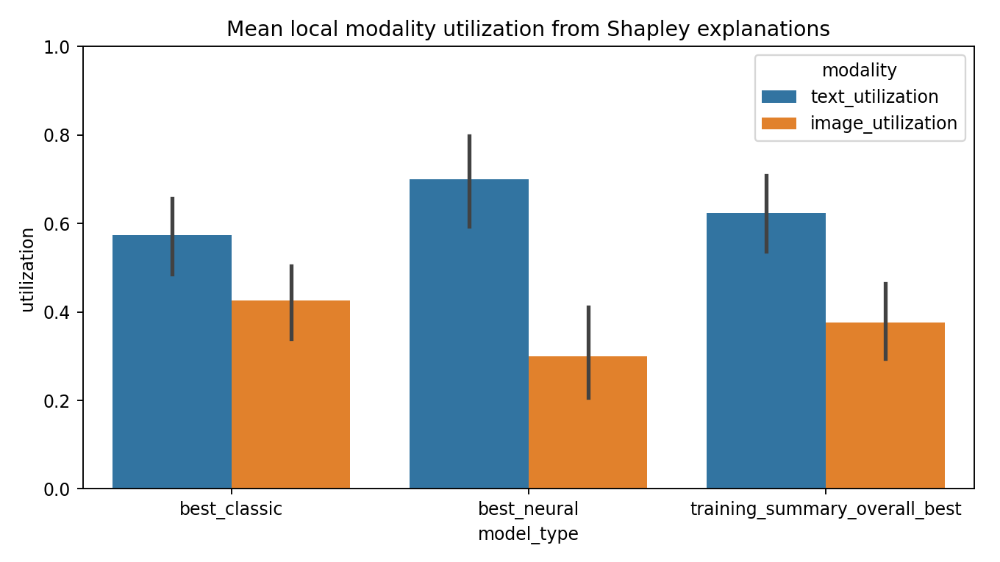

Output root: /content/drive/MyDrive/Explaining-Predictions-of-Machine-Learning-Models/outputs/colab_test_xai_all_models/run_20260518_232730
{
"RUN_TEST_EVALUATION": false,
"RUN_XAI": true,
"XAI_LIMIT": 10,
"XAI_SAMPLING_STRATEGY": "balanced_support_bins",
"XAI_RANDOM_SEED": 42,
"XAI_MODEL_KEYS": null
}
{
"selection_metric": "macro_f1",
"best_overall": null,
"best_classic": null,
"ablations": [],
"skipped_reason": "RUN_TEST_EVALUATION=False"
}
Metric evaluation skipped.

/content/drive/MyDrive/Explaining-Predictions-of-Machine-Learning-Models/outputs/colab_test_xai_all_models/run_20260518_232730/model_manifest.json/content/drive/MyDrive/Explaining-Predictions-of-Machine-Learning-Models/outputs/colab_test_xai_all_models/run_20260518_232730/all_model_test_metrics.json/content/drive/MyDrive/Explaining-Predictions-of-Machine-Learning-Models/outputs/colab_test_xai_all_models/run_20260518_232730/test_metric_ranking.csv/content/drive/MyDrive/Explaining-Predictions-of-Machine-Learning-Models/outputs/colab_test_xai_all_models/run_20260518_232730/per_label_metrics.csv/content/drive/MyDrive/Explaining-Predictions-of-Machine-Learning-Models/outputs/colab_test_xai_all_models/run_20260518_232730/predictions/content/drive/MyDrive/Explaining-Predictions-of-Machine-Learning-Models/outputs/colab_test_xai_all_models/run_20260518_232730/xai/content/drive/MyDrive/Explaining-Predictions-of-Machine-Learning-Models/outputs/colab_test_xai_all_models/run_20260518_232730/xai_global